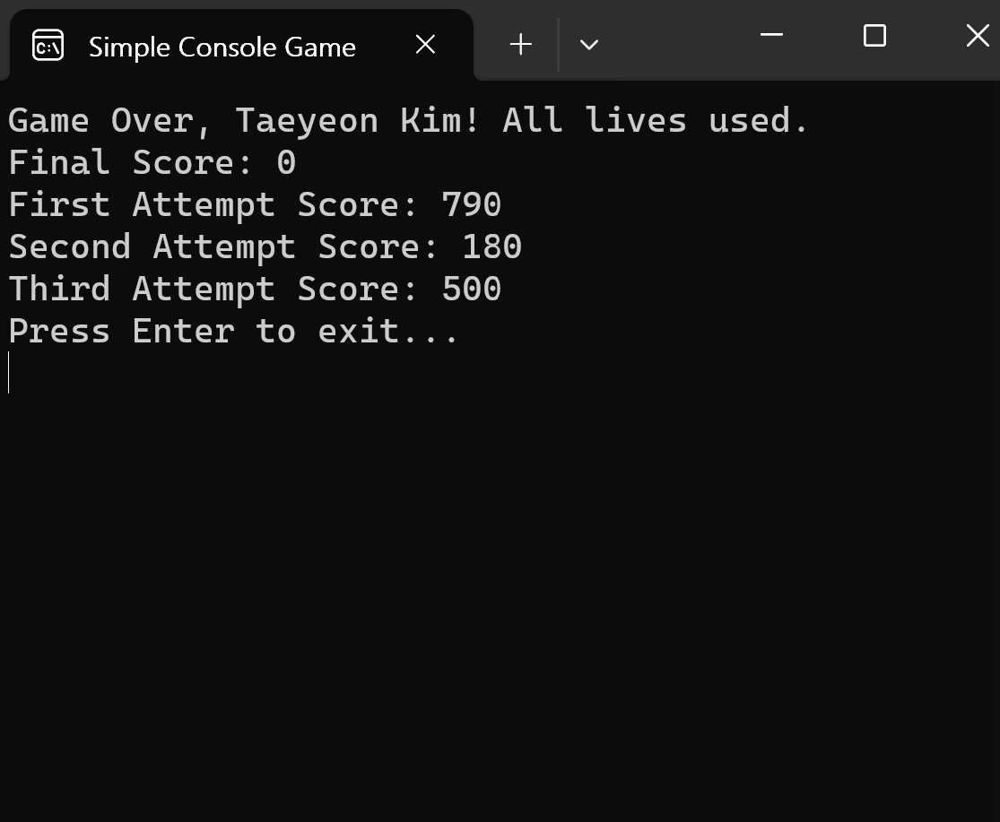

C# Simple Console Game project

What it is
This project is a simple console-based game implemented in C#. The game involves a player navigating through a falling object (enemy) to avoid collisions and accumulate points.
What I did
Console Application Development
Creating a console application familiarized me with the basic syntax and concepts of the C# language and the .NET framework.Game Logic Implementation
Implementing the basic logic of the game provided hands-on experience with concepts such as user input handling and the game loop.File I/O Operations
Storing and retrieving ranking information to and from a file enhanced my understanding of file input/output operations.Random Number Generation
Utilizing the Random class to generate random positions for enemies in the game increased my experience with generating random numbers.Code Organization into Multiple Files
Managing multiple classes, modularizing code, and considering code organization for better maintainability.Threading and Game Loop Control
Using Thread.Sleep to control the speed of the game loop introduced basic threading concepts and how to control the flow of a game.Console Window Control
Adjusting the size and position of the console window provided insights into controlling the console window.Exception Handling
Handling exceptions in areas such as user input or file read/write operations improved the program's stability.
TOP